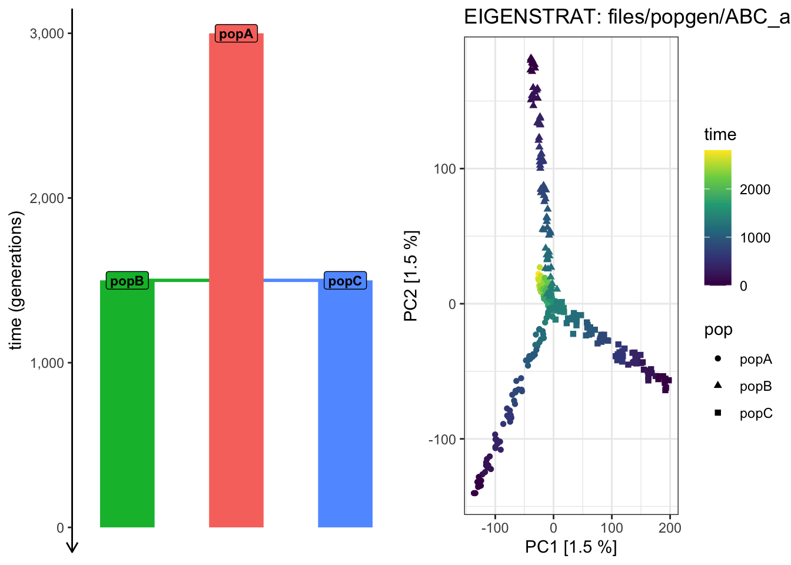
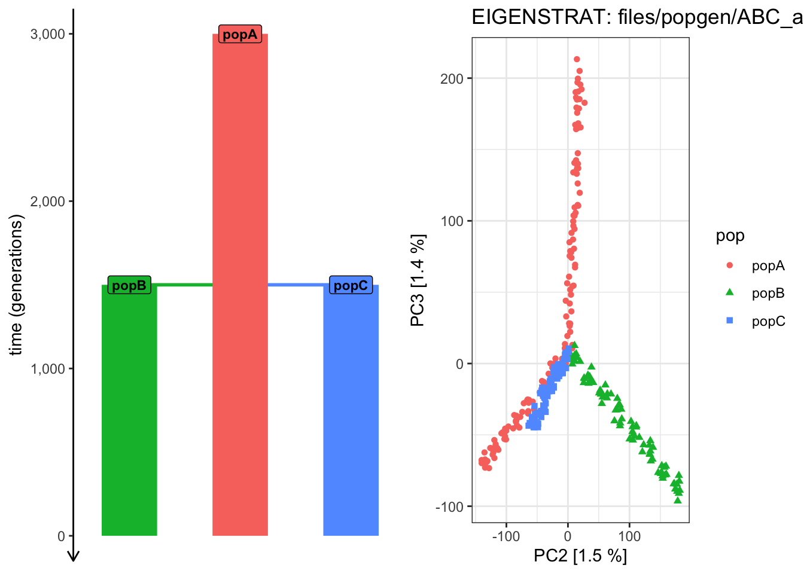
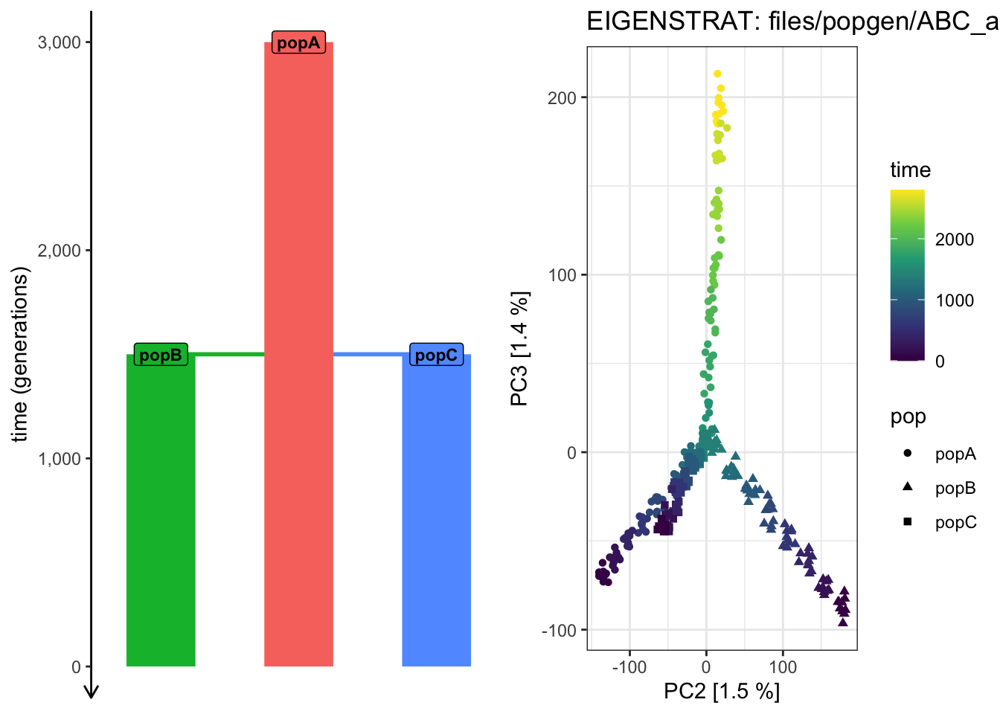
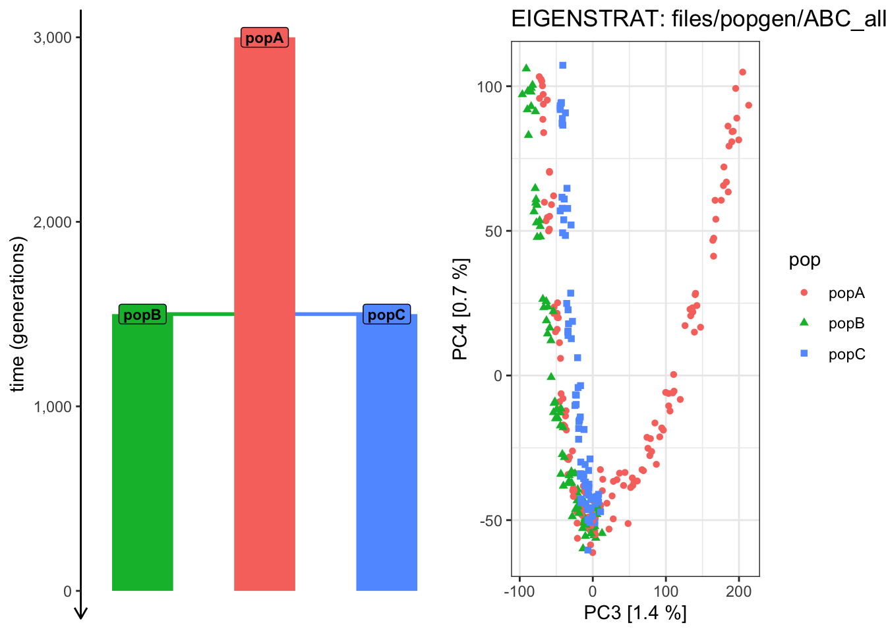
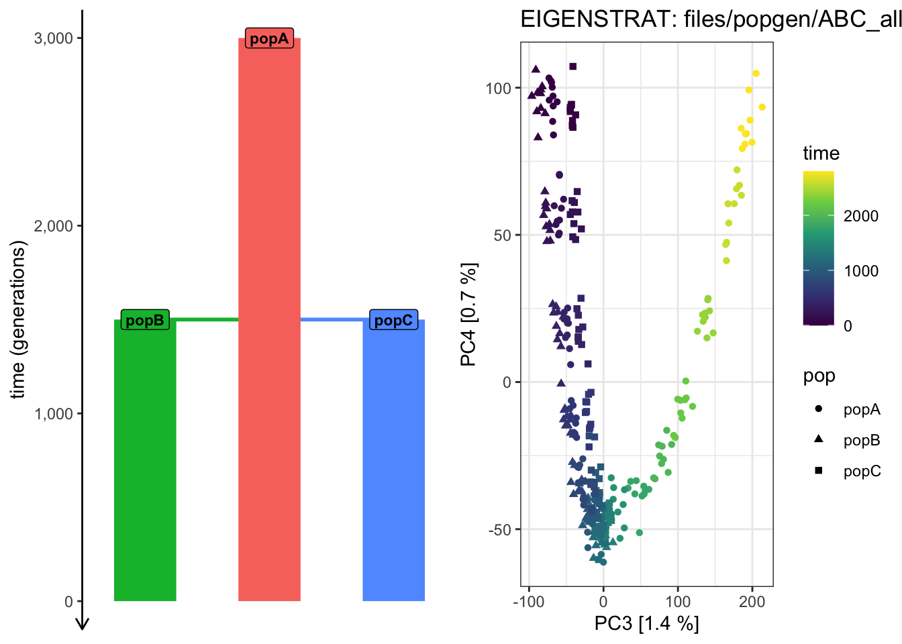
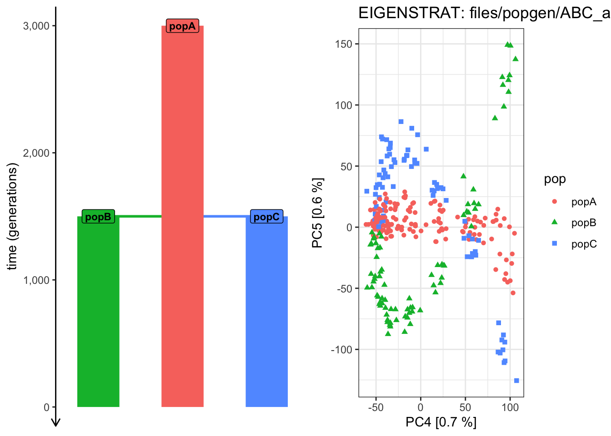
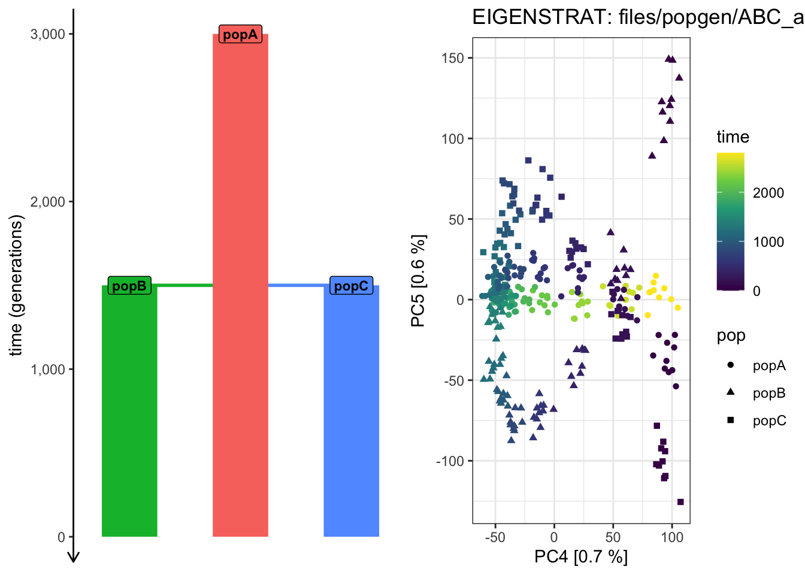
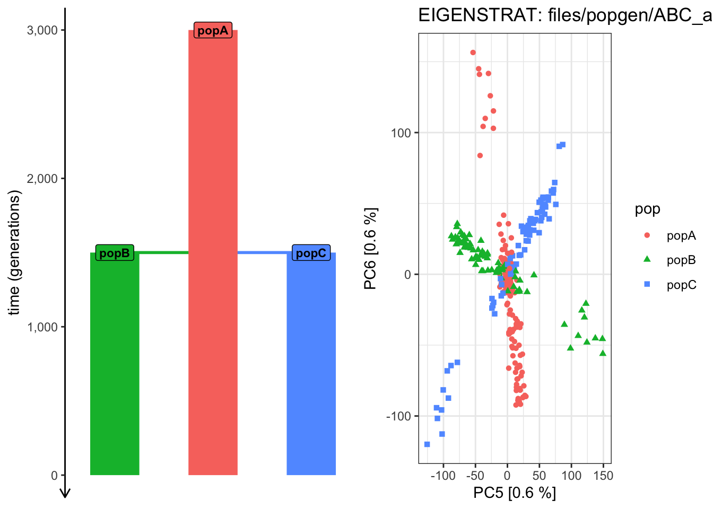
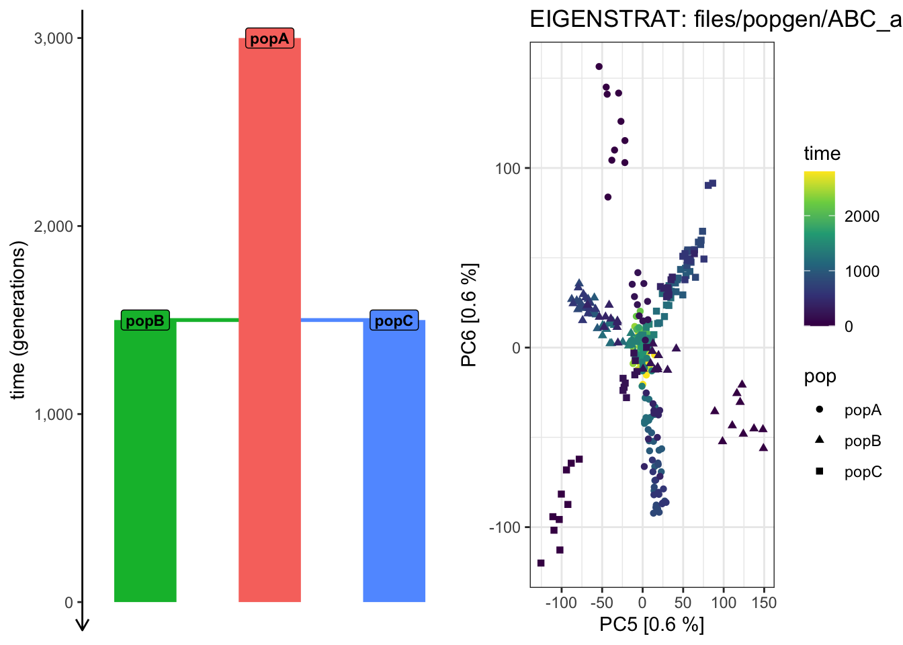

Note: We’re unlikely to make it to this part, so this is extra bonus which can be ignored!
In earlier lectures you’ve learned about the Principal Component Analysis, a dimensional-reduction technique that’s a central piece of many (if not most) papers studying population history of many (hundreds) of individuals genotyped across many (millions) SNPs.
Although incredibly popular, PCA has recently been a topic of controversy, with a highly combative paper criticizing the application of PCA in all of population genetics, almost to a point of claiming that none of the results can be published. As an example, take a look at Figure 5 in the paper, demonstrating that an Indian population can be arbitrarily placed in proximity to Europeans, East Asians, and Africans, simply by wiggling the sample sizes of all groups before they applying PCA on their genotype data.
This activity session is not a place to debate the merit of PCA (or any other popgen method for that matter). What we can do (as we’ve done in previous exercises) is to show how slendr can be used in a very easy way to evaluate patterns, expected behavior, and overall dynamics of many popgen metrics in a controlled settings – and in this way, verify our intuition and check the robustness of a method in question – using PCA as another example. We’ll be specifically looking at patterns which arise in PCA depending on the exact spatio-temporal sampling from a demographic model.
Part 1: Create a model
Start a new script named exercise5.R with the following setup of another toy demographic model:
library(slendr)init_env(quiet =TRUE)source(here::here("files/popgen/popgen_utils.R"))popA <-population("popA", time =3000, N =5000)popB <-population("popB", time =1500, N =5000, parent = popA)popC <-population("popC", time =1500, N =5000, parent = popA)model <-compile_model(list(popA, popB, popC), generation_time =1)schedule <-schedule_sampling(model, times =seq(3000, 0, by =-200),list(popA, 10), list(popB, 10), list(popC, 10))plot_model(model, proportions =TRUE, samples = schedule)
As you can see, this model describes the demographic history of three populations: one ancestral population “popA” starting at 3000 generations ago, which splits into two populations “popB” and “popC” the same time at 1500 generations ago. We den instruct slendr to record 10 individuals from each of the three populations starting from 3000 generations ago all the way to 0 generations ago (i.e. the “present”), every 200 generations (remeber the seq() R function!).
Part 2: Simulate a (mutated!) tree sequence
To be able to run PCA using the smartsnp R package (below), we will need to simulate data in the EIGENSTRAT file format. And to do that, we need our tree sequence with mutations.
Recall that all of our previous exercises managed to do away with mutations completely, owing to the amazing nature of the succint tree sequence data structure invented by the people behind the tskit project. However, all traditional popgen software and tools still rely on genotype data, which is why we now have to simulate mutations as well. Luckily, this is very easy – instead of the traditional
# First run a normal msprime simulation creating a tree-sequence object, then# directly pipe it into a function which adds (neutral!) mutations to itts <-msprime(model, sequence_length = ..., recombination_rate = ..., samples = ...) %>%ts_mutate(mutation_rate = ...)
which is equivalent to running this without the %>% “pipe operator”:
# First run a normal msprime simulation creating a tree-sequence object...ts_nomuts <-msprime(model, sequence_length = ..., recombination_rate = ..., samples = ...)# ... then add (neutral!) mutations to itts <-ts_mutate(ts_nomuts, mutation_rate = ...)
With that out of the way, simulate a tree sequence from the popA/popB/popC model above, which will be 50 Mb (50e6) long, with a recombination rate 1e-8, and overlay mutations on it at a rate 1e-8. Check that it has mutations either by typing out ts in the console and looking for a “Mutations” section of the summary, or by using the function ts_table(ts, "mutations"). Then count how many individuals you have recorded for each population using the table produced by ts_samples().
Click to see the solution
# First run a normal msprime simulation creating a tree-sequence object, then# directly pipe it into a function which adds (neutral!) mutations to itts_nomuts <-msprime(model, samples = schedule, sequence_length =50e6, recombination_rate =1e-8, random_seed =1702182272)# Notice we have no mutations on the tree sequence, just as before...ts_nomuts
# Get the table of individuals (and process it a bit for tidier plotting later)samples <-ts_samples(ts) %>%mutate(pop =factor(pop, levels =c("popA", "popB", "popC")))# Count how many individuals do we have for each populationsamples %>%group_by(pop) %>%count()
# A tibble: 3 × 2
# Groups: pop [3]
pop n
<fct> <int>
1 popA 150
2 popB 80
3 popC 80
Part 3: Converting a tree sequence into EIGENSTRAT
The function to use for converting a tree-sequence object we have in R (in our exercises the thing we usually had in the ts variable) to disk in form of genotypes in the EIGENSTRAT format is called ts_eigenstrat(). The standard way to call it (but see ?ts_eigenstrat for more options) is like this:
Which creates three files .ind, .snp, and .geno as: - path/to/a/desired/EIGENSTRAT/prefix.ind, - path/to/a/desired/EIGENSTRAT/prefix.snp, and - path/to/a/desired/EIGENSTRAT/prefix.geno,
just as you would expect for any EIGENSTRAT file.
Take your tree sequence ts just just simulated, and convert it to EIGENSTRAT format under the prefix files/popgen/ABC_all.
Click to see the solution
ts_eigenstrat(ts, "files/popgen/ABC_all")
198 multiallelic sites (0.117% out of 168987 total) detected and removed
EIGENSTRAT object
=================
components:
ind file: files/popgen/ABC_all.ind
snp file: files/popgen/ABC_all.snp
geno file: files/popgen/ABC_all.geno
Check that the EIGENSTRAT files really appeared at the path that you specified (in the terminal).
Part 4: Inspect the EIGENSTRAT data produced by slendr
Years ago I developed a small R package to help me with \(f\)-statistics based projects using the ADMIXTOOLS software (which operates on data in the EIGENSTRAT file format), called admixr
Use the following code to examine one of the EIGENSTRAT data sets you’ve just created. Just look at the results and see if they make sense in terms of what you’ve learned about this in earlier lectures.
library(admixr)eigen <-eigenstrat("<prefix of a trio of EIGENSTRAT .ind/.snp/.geno files")# Print out a summary of the EIGENSTRAT dataeigen# Read the .ind file as a table into Rread_ind(eigen)# Read the .snp file as a table into Rread_snp(eigen)# Read the .geno file as a table into Rread_geno(eigen)
Click to see the solution
library(admixr)eigen <-eigenstrat("files/popgen/ABC_all")# Print out a summary of the EIGENSTRAT dataeigen# Read the .ind file as a table into Rread_ind(eigen)# Read the .snp file as a table into Rread_snp(eigen)# Read the .geno file as a table into Rread_geno(eigen)
Part 5: Principal Component Analysis on the entire simulated data set
Now, at long last, we have everything we need to be able to run ABC on the data generated by our slendr model. To avoid making this exercise even longer, I provided a helper function for you called plot_pca(). But this function isn’t doing anything magical – it uses the smartsnp R package to compute the principal components and visualize the results using ggplot2. This is something many of you could do given enough time but we want to focus on simulations and PCA, not pure R coding. If you’re interested, take a look at my implementation of plot_pca()here.
Here’s how you can use this function (remeber that you need to put source(here::here("files/popgen/popgen_utils.R")) into your script!):
Plot PCA while coloring each individual by their population assignment:
plot_pca("path/to/prefix", <tree sequence used to create EIGENSTRAT>, color_by ="pop")
Plot PCA while coloring each individual by their time of sampling:
plot_pca("path/to/prefix", <tree sequence used to create EIGENSTRAT>, color_by ="time")
By default, the function plots PC 1 vs PC 2, but you can customize things by providing an optional argument pc = like this:
plot_pca("path/to/prefix", <tree sequence used to create EIGENSTRAT>, color_by ="pop", pc =c(2, 3))
Use the provided plot_pca() function to run PCA based on genotypes for all recorded individuals that you just converted as EIGENSTRAT "files/popgen/ABC_all" from the ts tree sequence. Visualize PC 1 vs PC 2 by first ccolor each individual by their population label (color_by = "pop") then by the time of their sampling (color_by = "time").
Does the PCA of PC 1 vs PC 2 capture the relationship between all individuals across the populations and across time?
Click to see the solution
plot_pca("files/popgen/ABC_all", ts, color_by ="pop", pc =c(1, 2))
PCA cache for the given EIGENSTRAT data was not found. Generating it now (this might take a moment)...
plot_pca("files/popgen/ABC_all", ts, color_by ="time", pc =c(1, 2))
PCA cache for the given EIGENSTRAT data was found. Loading it to save computational time...

It looks like the PCA from PC 1 vs 2 cannot “partition out” the drift along the ancestral “popA” lineage prior to the population splits!
Use plot_pca() to compute the PCAon this exact same data, but examine how does the shape of the PCA scatterplot change when you switch the pairs of PCs plotted (i.e., PC 2 vs PC 3, PC 3 vs PC 4, PC 4 vs PC 6, etc.). Which pair of PCs does the best job at recapitulating the demographic model?
Note: We’re doing this purely for educational purposes and for fun, using an extremely idealistic demographic model which is perfectly known (by definition, because we simulated it) and perfect sampling scheme. The point is to explore what does doing a PCA mean in practice, visually, and to built intuition into it.
Click to see the solution
# We can see that the overall shape of the demographic model tree is now nicely# reflected in the PCA shapeplot_pca("files/popgen/ABC_all", ts, color_by ="pop", pc =c(2, 3))
PCA cache for the given EIGENSTRAT data was found. Loading it to save computational time...

plot_pca("files/popgen/ABC_all", ts, color_by ="time", pc =c(2, 3))
PCA cache for the given EIGENSTRAT data was found. Loading it to save computational time...

plot_pca("files/popgen/ABC_all", ts, color_by ="pop", pc =c(3, 4))
PCA cache for the given EIGENSTRAT data was found. Loading it to save computational time...

plot_pca("files/popgen/ABC_all", ts, color_by ="time", pc =c(3, 4))
PCA cache for the given EIGENSTRAT data was found. Loading it to save computational time...

# Things are getting progressively wilder! plot_pca("files/popgen/ABC_all", ts, color_by ="pop", pc =c(4, 5))
PCA cache for the given EIGENSTRAT data was found. Loading it to save computational time...

plot_pca("files/popgen/ABC_all", ts, color_by ="time", pc =c(4, 5))
PCA cache for the given EIGENSTRAT data was found. Loading it to save computational time...

# ...plot_pca("files/popgen/ABC_all", ts, color_by ="pop", pc =c(5, 6))
PCA cache for the given EIGENSTRAT data was found. Loading it to save computational time...

plot_pca("files/popgen/ABC_all", ts, color_by ="time", pc =c(5, 6))
PCA cache for the given EIGENSTRAT data was found. Loading it to save computational time...

Bonus exercises
Bonus 1: Tree-sequence simplification and EIGENSTRAT conversion
One of our goals in this exercise was to investigate how does the shape of a PCA look like based on the sampling of individuals across populations and also across time – all of that from the same demographic history. In order to do that, we need to be able to select only a defined subset of individuals from a given tree sequence. Which brings us to the last tree-sequence processing function in slendr callsed ts_simplify(). Implemented on top of the simplify() method in tskit, it has a very simple interface:
ts_small <-ts_simplify(ts_big, simplify_to =c(<subset of individuals as a vector>))
This function call creates a new tree sequence, which is smaller and only contains a those individuals whose names were specified in simplify_to = (again, we’re talking about the “symbolic names” of individuals, such as “NEA_1”, “AFR_42”, etc., not integer numbers of tskit nodes).
Whenever you want to create smaller subsets of a large tree sequence, it is often helpful to work with the table of all individuals in the original tree sequence, because it contains every individual’s name, pop assignment and the time in which it lived, so let’s save it for further use now:
samples <-ts_samples(ts)nrow(samples)
[1] 310
For instance, we can get only individuals from “popB” and “popC” sampled at the present using this code:
subset <-filter(samples, pop %in%c("popB", "popC"), time ==0)nrow(subset)
[1] 20
You know that the table of samples contains the name of each individual, which you can access as subset$name. Use the ts_simplify() function to create a new tree sequence called ts_BC0 which contains only this subset of individuals. Check that it really does contain only the defined subset of individuals using ts_samples(ts_BC0).